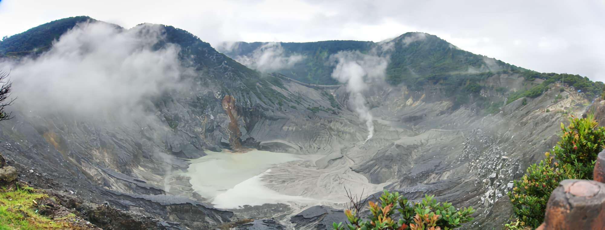
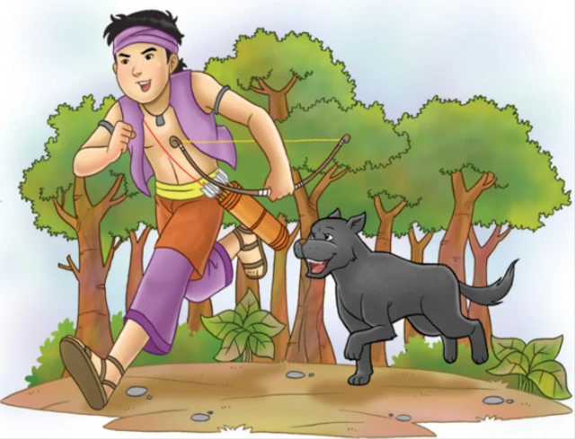

Di tanah Pasundan, Jawa Barat, tersimpan sebuah legenda yang
menjelaskan asal-usul Gunung Tangkuban Perahu. Cerita ini bermula dari
seorang putri cantik bernama Dayang Sumbi yang tinggal di sebuah
kerajaan.
Dayang Sumbi dan Tumang
Dayang Sumbi adalah putri raja yang sangat cantik dan pandai menenun.
Suatu hari, ketika sedang menenun, torak (alat tenun) nya terjatuh.
Karena malas mengambilnya sendiri, dia berkata
"Siapa pun yang mau mengambilkan torakku, jika perempuan akan
kujadikan saudara, jika laki-laki akan kujadikan suami."
Ternyata yang mengambil torak itu adalah seekor anjing bernama Tumang.
Karena sudah terlanjur berjanji, Dayang Sumbi pun menikahi Tumang yang
sebenarnya adalah titisan dewa. Dari pernikahan ini lahirlah seorang
anak laki-laki yang diberi nama Sangkuriang.
Sangkuriang Membunuh Tumang
Sangkuriang tumbuh menjadi pemuda yang tampan dan gagah. Suatu hari,
ketika berburu dengan Tumang, mereka tidak mendapatkan hasil sama
sekali. Karena malu pulang dengan tangan hampa, Sangkuriang memutuskan
untuk membunuh Tumang dan membawa dagingnya kepada ibunya.

Ilustrasi Sangkuriang saat berburu dengan Tumang

Dayang Sumbi mengetahui Sangkuriang membunuh Tumang
Ketika Dayang Sumbi mengetahui bahwa daging yang dimasaknya adalah
Tumang, suaminya sendiri, dia sangat marah. Dalam kemarahannya, dia
memukul kepala Sangkuriang dengan sendok nasi hingga terluka dan
mengusirnya dari rumah.
Pertemuan Kembali
Bertahun-tahun kemudian, Sangkuriang yang telah mengembara dan menjadi
pemuda kuat kembali ke kampung halamannya. Dia tidak mengenali ibunya
sendiri yang tetap cantik karena diberi usia panjang oleh para dewa.
Dayang Sumbi pun tidak mengenali anaknya yang telah dewasa.
Mereka pun jatuh cinta dan berniat untuk menikah. Namun, ketika Dayang
Sumbi sedang membelai rambut Sangkuriang, dia melihat bekas luka di
kepala calon suaminya. Dengan terkejut dia menyadari bahwa pemuda itu
adalah anaknya sendiri.
Syarat yang Mustahil
Dayang Sumbi berusaha menggagalkan pernikahan ini dengan memberikan
syarat yang mustahil: Sangkuriang harus membuat sebuah danau besar
dengan perahu besar di atasnya dalam waktu semalam.
Fakta Menarik
Nama "Tangkuban Perahu" berasal dari bahasa Sunda yang berarti
"perahu terbalik", sesuai dengan bentuk gunung yang menyerupai
perahu terbalik.
Dengan kekuatan gaib yang dimilikinya, Sangkuriang hampir
menyelesaikan tugas ini. Dia membendung sungai Citarum dengan bantuan
para jin untuk membuat danau dan membuat perahu besar dari sebuah
pohon.
Fajar Menyingsing
Melihat Sangkuriang hampir menyelesaikan tugasnya, Dayang Sumbi
meminta bantuan warga untuk mengibaskan kain putih dan memukul lesung
seolah-olah fajar telah tiba. Ayam-ayam pun berkokok.
Sangkuriang yang mengira fajar telah tiba menjadi marah karena gagal
menyelesaikan tugasnya. Dalam kemarahannya, dia menendang perahu besar
itu hingga terbalik dan menjadi Gunung Tangkuban Perahu. Bendungan
yang dibuatnya pun jebol dan airnya mengalir menjadi Danau Bandung
(yang kini sudah mengering).
Gunung Tangkuban Perahu dilihat dari udara yang bentuknya menyerupai
perahu terbalik
Nilai Moral Cerita
-
Jangan pernah mengucapkan sumpah atau janji sembarangan karena bisa
berakibat buruk
-
Kemarahan dan emosi yang tidak terkendali dapat menyebabkan
penyesalan
-
Hubungan incest (pernikahan sedarah) adalah tabu dan dilarang
-
Kita harus menerima konsekuensi dari perbuatan kita sendiri
-
Kecerdikan bisa mengalahkan kekuatan fisik
Pelajaran dari Legenda
Legenda Sangkuriang bukan sekadar cerita tentang asal-usul gunung,
tetapi juga mengandung pelajaran moral yang dalam tentang
konsekuensi dari sumpah sembarangan, bahaya emosi yang tidak
terkendali, dan larangan pernikahan sedarah.
Cerita ini juga menunjukkan kearifan lokal masyarakat Sunda dalam
menjelaskan fenomena alam melalui narasi yang penuh makna.